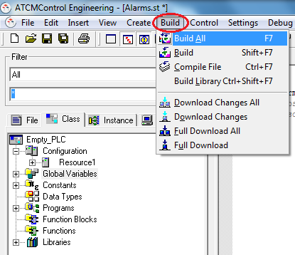
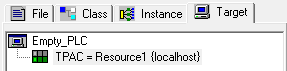
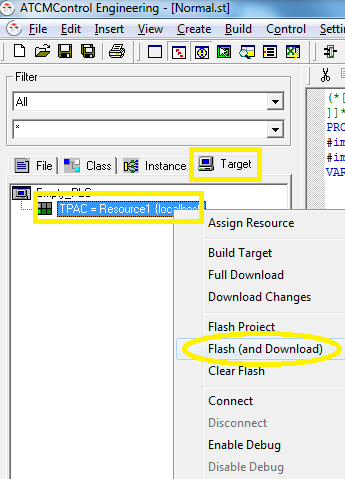

Una volta completato il programma è necessario compilare il progetto per verificare la mancanza di errori nel codice. Selezionare “Build” → “Build All” oppure premere F7.

Terminata la compilazione è necessario inviare il progetto al Pannello operatore.
Per trasferire il progetto appena compilato al pannello procedere come segue:
Selezionare il tab Target e selezionare con il tasto destro del mouse la scritta “TPAC= Resource{localhost}”. Nella finestra che appare, selezionare Proprierties.

Impostare l’indirizzo IP del pannello nella casella Control Address del Tag TCP/IP, quindi premere OK (di default è: 192.168.5.211 come quello dei pannelli quando escono dalla fabbrica)
Selezionare il tab Instance o Target
Selezionare TPAC = Resource1 {localhost} e premere il tasto destro del mouse selezionando Flash (and Download)

Al termine del processo, nella parte bassa della finestra verrà mostrato il messaggio: “Download Finished”. Nel caso in cui appaia una finestra di errore occorre riprovare a selezionare “Flash (and Download)”.
Se non si desidera effettuare del debug è consigliabile disconnettersi dal pannello, per far ciò selezionare TPAC = Resource1 {localhost} e premere, con il tasto destro del mouse, la voce Disconnect